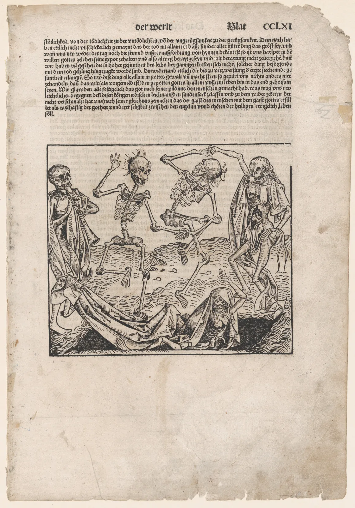
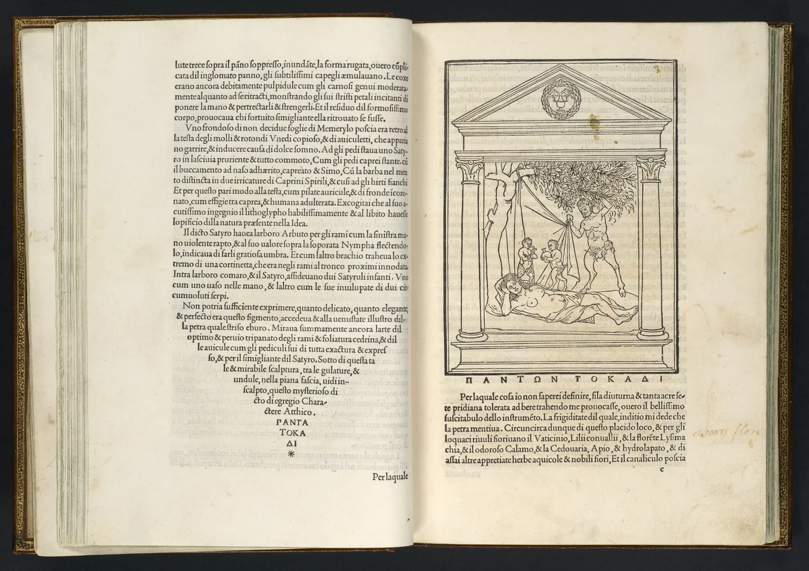

읽히는 글자
책방 E 주인이 휴대폰을 내밀며 말했다. "할머니 손님도 휴대폰으로 소식을 읽으신다." 그 손님은 휴대폰을 팔 길이만큼 멀리 들고, 날짜가 적힌 연회색 줄에서 한참 눈을 찌푸리다가 결국 돋보기를 꺼냈다고 한다. 서윤이 보기에는 문제없이 읽히는 화면이었다. 같은 화면이 누구에게는 읽히고 누구에게는 읽히지 않는다. 이 장은 "읽힌다"는 말을 몇 가지 잴 수 있는 조건으로 나눈다. 글자의 크기는 거리와 함께 재야 하고, 글자와 바탕의 밝기 차이는 숫자로 확인할 수 있다. 반대로 "세리프가 더 잘 읽힌다", "난독증에는 이 글꼴" 같은 말은 연구로 다시 보면 생각보다 근거가 약하다. 무엇이 확인되었고 무엇이 아직 모르는 일인지를 나눠 보는 것이 이 장의 목표다.
- 판독성과 가독성을 구별하고, 헷갈리기 쉬운 글자 짝이 어떤 조건에서 무너지는지 시뮬레이터로 확인한다.
- 글자 크기를 시각(視角)으로 바꿔 계산하고, 시력과 거리에 따라 같은 글자가 다르게 읽히는 이유를 설명한다.
- WCAG 대비 기준(4.5:1, 3:1, 7:1)이 무엇을 재고 무엇을 재지 않는지 안다.
- 나이 든 눈과 눈부심이 대비를 어떻게 깎는지 계산해 본다.
- 세리프 통설과 난독증 글꼴 주장을 연구의 수준에 맞게 평가한다.
보이는 것, 알아보는 것, 읽히는 것
"잘 읽힌다"는 말에는 세 층이 겹쳐 있다. 맨 아래는 거기 글자가 있다는 것을 알아채는가다. 간판이나 표지판에서 주로 따지는 이 성질을 흔히 시인성(Visibility)이라고 부른다. 그 위에 있는 것이 판독성(Legibility)이다. 글자 하나하나를 서로 헷갈리지 않고 알아볼 수 있는 정도를 말한다. 맨 위가 가독성(Readability)이다. 글 전체를 편하게, 오래, 내용에 집중하며 읽을 수 있는 정도다. 판독성은 주로 글꼴과 크기와 대비가 정하고, 가독성은 거기에 자간·행간·글줄 길이(5장, 6장)와 글의 내용, 읽는 사람의 익숙함까지 함께 작용한다.
한국어 용어는 아직 통일되어 있지 않다. 책과 업계에 따라 legibility를 "가독성"으로 옮기기도 하고, "판독성", "식별성"이라고 쓰기도 한다. 이 책은 위의 세 층을 시인성·판독성·가독성으로 부른다. 이름보다 중요한 것은 지금 따지는 것이 글자 한 자의 문제인지, 글 한 편의 문제인지를 나누는 일이다.
판독성이 가장 먼저 무너지는 곳은 서로 비슷하게 생긴 글자들이다. 라틴 글자의 대문자 I와 소문자 l, 숫자 1, 붙여 쓴 rn과 m, 대문자 O와 숫자 0이 대표적이다. 한글은 자모가 모여 한 자를 이루므로, 글자 전체가 아니라 한 획, 한 점의 차이로 갈리는 짝이 많다. "웃"과 "옷"은 모음의 짧은 획 하나가 위냐 아래냐로, "갈"과 "걀"은 짧은 가로획 하나로 갈린다. 받침이 겹쳐 획이 빽빽한 "흙", "뷁" 같은 글자는 작아지면 속공간이 먼저 메워진다(3장).
아래 시뮬레이터는 이런 짝을 같은 크기로 그린 뒤 점점 흐리게 만든다. 흐림은 글자에서 멀어지거나, 시력이 낮거나, 화면이 거칠 때를 대신한다. 막대는 두 글자의 모양이 얼마나 다르게 남아 있는지를 보여 준다. 글꼴을 바꿔 가며 어떤 짝이 먼저 무너지는지 본다.
헷갈리는 글자 짝은 언제 무너지나
흐림을 올리면 막대가 짧아지는 순서가 글꼴마다 조금씩 다르다. 판독성을 높이려고 설계한 글꼴은 대체로 비슷한 글자의 차이를 일부러 키운다. 그래서 숫자와 글자가 섞이는 비밀번호·계좌번호·약 이름에는 이런 글꼴이나 0에 점이나 빗금을 넣은 고정폭 글꼴을 쓴다. 다만 이 지표는 모양의 차이일 뿐, 사람이 실제로 덜 틀리는지를 잰 실험이 아니다. 판독성의 실제 효과는 사람을 놓고 재야 하고, 그 결과는 뒤에서 보듯 생각보다 조건을 많이 탄다.
크기는 거리와 함께 잰다: 시각
글자 크기를 "16픽셀", "10포인트"라고 말하지만, 눈에게 중요한 것은 그 글자가 망막에 얼마나 크게 맺히느냐다. 1 m 떨어진 2 cm 글자와 2 m 떨어진 4 cm 글자는 눈에 같은 크기로 보인다. 그래서 시각 과학은 글자 크기를 눈에서 글자의 위아래 끝을 잇는 두 선이 이루는 각도, 곧 시각(視角, Visual angle)으로 잰다. 단위는 도(°)와 그 60분의 1인 분(′)이다.
시각으로 바꾸면 두 개의 기준과 비교할 수 있다. 하나는 시력(Visual acuity)의 한계다. 시력표에서 시력 1.0(영미식 20/20)은 높이가 5′인 글자를 알아보는 능력으로 정의된다. 시력 0.5면 그 두 배인 10′ 글자가 한계다. 그러나 한계 크기의 글자는 "겨우 알아보는" 크기이지 읽을 만한 크기가 아니다.
다른 하나는 읽기 속도의 기준이다. 시각 과학자 고든 레그(Gordon E. Legge)와 글꼴 디자이너 찰스 비글로(Charles Bigelow)는 2011년의 검토 논문에서, 정상 시력의 성인은 글자 크기가 일정한 크기보다 크기만 하면 넓은 범위에서 읽기 속도가 거의 같고, 그보다 작아지면 속도가 급히 떨어진다는 연구들을 정리했다. 속도가 떨어지기 시작하는 이 경계를 임계 글자 크기(Critical print size)라고 하며, 정상 시력에서 라틴 소문자 x높이로 약 0.2°였다. 이 값은 시력에 따라 달라서, 시력이 낮은 사람은 임계 크기도 커진다. 그리고 한 가지 주의할 점이 있다. 이 연구들은 대부분 라틴 글자로 이루어졌다. 한글에는 x높이가 없고, 한 글자 안에 획이 훨씬 촘촘하다. 한글의 임계 글자 크기를 같은 방식으로 정리한 연구는 이 책이 확인한 범위에서는 찾지 못했다. 아래에서는 라틴 x높이와 함께 한글 글자의 실제 높이를 나란히 보여 준다.
아래에서 눈 그림의 손잡이를 좌우로 끌어 거리를 바꾸고, 글자 크기와 매체를 바꿔 본다. 아래 막대는 지금 글자의 시각을 시력 한계와 임계 글자 크기에 대어 본 것이다.
글자 크기를 시각으로 바꾸기
계산해 보면 휴대폰 본문에 흔히 쓰는 크기는 정상 시력 성인에게도 임계 글자 크기 바로 위에 있다. 레그와 비글로는 같은 논문에서, 책과 신문의 본문 크기가 오랜 관습을 거치며 보통의 독서 거리에서 이 임계 크기보다 조금 큰 쪽에 자리 잡았다는 해석도 내놓았다. 여유가 크지 않다는 뜻이다. 그러니 시력이 조금 낮은 사람, 휴대폰을 더 멀리 드는 사람에게는 같은 글자가 쉽게 경계 아래로 떨어진다. 휴대폰을 멀리 드는 것도 이유가 있다. 나이가 들면 수정체가 굳어 가까운 곳에 초점을 맞추기 어려워지는 노안(Presbyopia)이 거의 모든 사람에게 찾아오고, 그러면 초점이 맞는 거리까지 화면을 밀어내게 된다. 멀어진 만큼 시각은 작아진다.
대비: 글자와 바탕의 밝기 차이
크기 다음은 대비(Contrast)다. ColorBook 6장에서 본 것처럼, 글자가 읽히는 데는 색상 차이보다 밝기(명도) 차이가 먼저 일한다. 웹 접근성 지침 WCAG(Web Content Accessibility Guidelines) 2.x는 글자색과 바탕색의 상대 휘도로 1:1부터 21:1까지의 대비비를 계산하고, 기준을 이렇게 정한다(ColorBook 13장에서 자세히 다룬다).
| WCAG 2.2 성공 기준 | 일반 글자 | 큰 글자 |
|---|---|---|
| 1.4.3 최소 대비(AA) | 4.5:1 | 3:1 |
| 1.4.6 향상된 대비(AAA) | 7:1 | 4.5:1 |
여기서 "큰 글자"는 18pt(CSS로 24px) 이상, 또는 굵게 쓴 14pt(약 18.66px) 이상이다. 기준은 글자색과 바탕색의 휘도만 본다. 글꼴이 얼마나 가는지, 한글인지 라틴인지는 보지 않는다. 그래서 가는 명조로 쓴 작은 한글은 같은 대비비라도 굵은 고딕보다 흐리게 읽힐 수 있다. 이 빈틈을 메우려는 새 계산법으로 APCA(Accessible Perceptual Contrast Algorithm)가 WCAG 3 초안의 후보로 논의되고 있다. APCA는 글자 크기와 굵기, 밝은 글자인지 어두운 글자인지를 함께 고려한다. 다만 아직 표준이 아니므로 이 책은 참고값으로만 쓴다.
아래 시뮬레이터에서 오른쪽 두 명도 막대의 손잡이를 끌어 글자와 바탕의 밝기를 바꾼다. 견본에는 날짜 줄(12px), 사진 설명(14px), 본문(16px), 굵은 소제목(19px), 제목(24px)이 같은 색으로 들어 있다. 각 줄 오른쪽 표시는 그 크기에 해당하는 WCAG 기준을 넘는지 보여 준다.
대비비는 크기마다 다른 문턱을 넘는다
#999999, L* 63)다. 대비비 2.85로 모든 줄이 기준 아래다. 세련돼 보여서 날짜·글쓴이 줄에 자주 쓰이는 색이다. ② 글자 명도를 내려 4.5:1을 넘기는 지점(L* 약 50, #767676 근처)을 찾는다. 작은 글자의 AA 문턱이다. 7:1(AAA)을 넘기려면 L* 약 40 아래까지 내려가야 한다. ③ "붉은 글자"로 바꾼다. 같은 명도면 대비비도 거의 같다. 붉은색이라서 더 잘 보이는 것이 아니다. ④ 바탕을 L* 20 아래로 내리고 글자를 밝게 올려 어두운 바탕을 만든다. 대비비 공식은 밝은 글자–어두운 바탕에도 같은 값을 주지만, APCA 값은 달라진다. (대비비는 WCAG 2.x 공식, APCA는 APCA-W3 0.0.98G-4g로 이 책 엔진이 계산했다. 글자색은 OKLCH 채도를 고정하고 CIELAB L*로 명도를 맞췄다.)대비비는 단순한 숫자지만 꽤 쓸모 있다. 두 색의 휘도만으로 정해지므로 디자이너가 "느낌상 잘 보이는" 색을 고르는 실수를 걸러 준다. 연회색 글자가 세련돼 보이는 이유는 바로 대비가 낮아 화면이 차분해지기 때문인데, 그 차분함의 비용을 치르는 사람은 시력이 낮은 독자다. 반대로 기준을 넘었다고 끝이 아니다. 기준은 최소한의 문턱이고, 뒤에서 보듯 햇빛이나 화면 반사가 끼면 실제 대비는 그보다 훨씬 낮아진다.
그러면 밝은 바탕에 어두운 글자와 어두운 바탕에 밝은 글자 중 어느 쪽이 나을까. 화면 극성을 비교한 실험들에서는 밝은 바탕에 어두운 글자가 작은 글자를 알아보는 데 대체로 유리했다는 보고가 있고, 피펜브로크(Cosima Piepenbrock) 등은 2013년 논문에서 이 경향이 젊은 성인과 나이 든 성인 모두에게서 나타났다고 보고했다. 이유로는 밝은 화면에서 동공이 작아져 초점 심도가 깊어지는 효과가 거론된다. 다만 차이는 조건에 따라 크지 않을 수 있고, 눈부심에 예민한 사람이나 어두운 곳에서는 어두운 바탕을 더 편하게 느끼기도 한다. 그래서 웹에서는 한쪽을 강요하기보다 사용자가 고른 화면 모드를 따르는 방식이 흔하다.
나이 든 눈, 흐린 초점, 눈부신 햇빛
시력표의 숫자만으로는 설명되지 않는 것이 있다. 나이가 들면 눈에 들어오는 빛이 줄고(동공이 작아지고 수정체가 누렇게 변한다), 수정체 안에서 빛이 흩어지는 양이 늘어난다. 흩어진 빛은 망막 전체에 옅은 빛의 막을 씌운다. 밝은 햇빛 아래에서 휴대폰을 볼 때도 비슷한 일이 생긴다. 화면 유리에 반사된 빛이 글자와 바탕 위에 똑같이 더해진다. 이 막을 베일 휘도(Veiling luminance)라고 한다.
베일은 글자와 바탕에 같은 양의 빛을 더하므로, 대비비 공식에 그대로 넣어 계산할 수 있다. 흰 바탕 휘도를 1이라 할 때 0.25만큼의 빛이 더해지면 짙은 초록 글자(#22342a)의 대비비는 13.2에서 3.9로, 연회색(#999999)은 2.85에서 2.1로 떨어진다. 대비가 높은 글자는 베일이 끼어도 문턱 근처에 남지만, 처음부터 낮았던 글자는 바로 사라진다.
아래 비교 그림의 왼쪽은 서점 소식 화면 그대로, 오른쪽은 초점이 흐리고 빛의 막이 낀 눈으로 본 모습을 흉내 낸 것이다. 가운데 경계선을 끌어 비교하고, 두 슬라이더를 올려 본다.
흐린 초점과 빛의 막이 끼면
#567666)과 14px로 바꿨을 뿐인데 같은 조건에서 훨씬 오래 남는다. ③ 베일을 60%까지 올린다. 고친 안의 날짜 줄도 결국 2:1 아래로 떨어진다. 한낮의 야외에서는 어떤 화면도 읽기 어렵다. 디자인으로 할 수 있는 일에는 끝이 있다. (흐림은 선형광에서의 상자 흐림 두 번, 베일은 흰 바탕 휘도에 대한 비율로 모든 점에 같은 빛을 더한 뒤 전체 밝기를 다시 맞춘 모형이다. 나이에 따른 실제 변화는 사람마다 크게 다르며, 이 그림은 원리를 보이기 위한 흉내다.)이 시뮬레이터가 보여 주는 것은 "기준을 넘겼다"와 "읽힌다" 사이의 거리다. 4.5:1을 겨우 넘긴 글자는 실내의 좋은 조명과 깨끗한 화면에서만 4.5:1이다. 그래서 오래 읽어야 하는 본문에는 최소 기준보다 넉넉한 대비를 주고, 작은 보조 글자는 적어도 최소 기준을 지키는 식으로 층을 두는 편이 안전하다. 다만 시력이 크게 낮은 사람에게는 어떤 고정된 디자인도 충분하지 않다. 그 사람들은 화면 확대, 큰 글자 설정, 고대비 모드, 화면 읽기 프로그램을 쓴다. 디자이너가 할 일은 그 도구들이 제대로 작동하게 길을 막지 않는 것이다. WCAG의 성공 기준 1.4.4(글자 크기 조정)는 보조 기술 없이 글자를 200%까지 키워도 내용과 기능이 사라지지 않아야 한다고 정한다.
user-scalable=no, maximum-scale=1)이나, 운영체제의 글자 크기 설정을 무시하도록 글자 크기를 고정하는 방식은 화면을 "깔끔하게" 유지하려는 이유로 종종 쓰인다. 그러나 그 깔끔함을 위해 시력이 낮은 독자가 쓸 수 있는 거의 유일한 도구를 빼앗는다. 할머니 손님이 돋보기를 꺼내야 했던 이유 중 하나가 이것일 수 있다. 확대와 글자 크기 설정은 막지 않는다.
세리프가 더 잘 읽힌다는 통설
"인쇄물 본문은 세리프 글꼴이 더 잘 읽히고, 화면은 산세리프가 더 잘 읽힌다." 타이포그래피에서 가장 자주 듣는 말 중 하나다. 세리프가 글줄을 따라 눈을 이끈다는 설명도 흔히 덧붙는다. 이 말은 얼마나 확인된 것일까.
가독성을 실험으로 재려는 시도는 100년이 넘었다. 미국의 심리학자 마일스 팅커(Miles A. Tinker)와 도널드 패터슨(Donald G. Paterson)은 20세기 중반까지 글꼴·크기·행간·글줄 길이를 바꿔 가며 읽기 속도를 잰 연구를 많이 남겼고, 팅커는 이를 『인쇄물의 판독성』(Legibility of Print, 1963)으로 정리했다. 이 연구들에서 흔히 쓰이는 본문용 글꼴들 사이의 속도 차이는 대체로 작았다. 노르웨이 출신의 타이포그래피 연구자 올레 룬(Ole Lund)은 1999년 영국 레딩 대학교의 박사 논문에서 세리프와 산세리프의 가독성을 비교한 수십 년 치 연구를 검토하고, 실험 방법이 제각각이고 결과도 엇갈려서 어느 한쪽이 더 잘 읽힌다는 일관된 증거는 없다고 결론지었다.
더 통제된 실험도 비슷한 방향을 가리킨다. 아리스 아르디티(Aries Arditi)와 조지연(Jianna Cho)은 2005년 논문에서 세리프만 다르고 나머지는 같은 글꼴을 만들어 비교했는데, 세리프의 유무가 판독성에 미치는 효과는 작았고, 아주 작은 크기에서 보인 약간의 이점은 세리프가 글자 사이 간격을 넓히는 효과로 설명할 수 있다고 보았다. 모리스(Robert A. Morris)와 비글로 등의 2002년 연구는 제목 그대로, 세리프가 아주 작은 크기에서는 읽기를 느리게 했지만 큰 크기에서는 차이가 없었다고 보고했다. 요컨대 현재까지의 근거로는 세리프 자체가 가독성을 정한다고 말하기 어렵다. 실험마다 크게 작용한 것은 세리프보다 x높이(같은 글자 크기에서 실제로 보이는 글자의 크기), 획의 굵기, 글자 사이 간격, 그리고 읽는 사람의 익숙함이었다.
"화면에는 산세리프"라는 말에는 역사적인 이유가 있었다. 해상도가 낮던 시절의 화면에서는 가는 세리프와 가는 가로획이 픽셀 격자에 걸려 끊기거나 들쭉날쭉해졌다. 한글 명조의 가는 가로획도 마찬가지였다. 화면 밀도가 높아진 지금은 이 이유가 크게 줄었지만, 작은 크기와 낮은 해상도에서는 여전히 유효하다(11장). 아래 시뮬레이터로 확인한다. 같은 문장을 명조와 고딕으로 짜고, 비교 기준과 화면의 거칠기를 바꿔 본다.
명조와 고딕: 같은 크기, 같은 x높이, 거친 화면
세리프 통설이 끈질긴 데는 이유가 있다. 오랫동안 책 본문은 대부분 세리프로, 화면 글자는 대부분 산세리프로 짜였다. 사람은 많이 읽은 글자를 잘 읽는다. 1990년 무렵 디지털 글꼴 디자이너 주자나 리츠코(Zuzana Licko)는 한 인터뷰에서, 글꼴이 본질적으로 읽기 쉬운 것이 아니라 독자가 그 글꼴에 익숙해서 읽기 쉬운 것이라는 취지의 말을 남겼다. 역사가 그 예를 보여 준다.


그렇다면 본문 글꼴은 아무것이나 써도 될까. 그렇지는 않다. 위의 연구들이 말하는 것은 "흔히 쓰이는, 잘 만든 본문용 글꼴들 사이에서는" 세리프 유무가 큰 차이를 만들지 않는다는 것이다. x높이가 너무 작거나, 획이 너무 가늘거나, 글자 사이가 너무 좁은 글꼴은 분명히 덜 읽힌다. 장식이 많은 제목용 글꼴로 본문을 짜면 당연히 느려진다. 명조와 고딕 중 무엇을 고를지는 이런 조건을 갖춘 후보들 사이에서, 매체와 크기와 글의 성격에 맞춰 정할 일이다(4장). "세리프라서 잘 읽힌다"는 이유는 그 판단에서 빼도 된다.
난독증 글꼴 주장의 근거
난독증(Dyslexia)은 지능이나 시력과 상관없이 글을 정확하고 유창하게 읽는 데 어려움을 겪는 학습 장애다. 연구자들 사이에서는 말소리를 쪼개고 다루는 음운 처리의 어려움이 주된 원인으로 널리 받아들여진다. 2000년대 이후 "난독증이 있는 사람을 위해 만든" 글꼴이 여럿 나왔다. 글자 아래쪽을 굵게 해 글자가 뒤집혀 보이지 않게 했다거나, 비슷한 글자의 모양을 서로 다르게 했다는 설명이 붙는다.
이 글꼴들을 실제로 시험한 연구들의 결과는 대체로 기대에 못 미쳤다. 레슬리 웨리(Jessica Wery)와 딜리베르토(Jennifer Diliberto)는 2017년 연구에서 그런 글꼴 중 하나(OpenDyslexic)가 난독증 학생들의 읽기 속도나 정확도를 높이지 않았다고 보고했다. 쿠스터(Sanne M. Kuster) 등은 2018년 연구에서 또 다른 글꼴(Dyslexie)이 난독증이 있는 아이와 없는 아이 모두에게 이점이 없었다고 보고했다. 렐로(Luz Rello)와 바에자예이츠(Ricardo Baeza-Yates)의 2013년 연구에서는 기울인 글꼴이 읽기를 방해했고, 흔한 산세리프·고정폭·로만 글꼴이 상대적으로 나았으며, 전용 글꼴의 이점은 보이지 않았다.
흥미로운 것은 이점이 있어 보일 때 그 원인을 따져 본 연구다. 마리누스(Eva Marinus) 등은 2016년 연구에서 전용 글꼴이 보인 약간의 이점이 글꼴 모양이 아니라 그 글꼴의 넓은 글자 간격 때문이었고, 흔한 글꼴의 간격을 같은 만큼 넓히자 차이가 사라졌다고 보고했다. 그보다 앞서 조르치(Marco Zorzi) 등은 2012년 연구에서 글자 사이를 크게 넓히면 난독증 아이들의 읽기 속도와 정확도가 나아졌다고 보고했다. 이후의 연구들에서 간격 효과의 크기와 재현은 엇갈리지만, "특별한 모양"보다 "넉넉한 간격"이 더 그럴듯한 후보라는 데는 근거가 쌓이고 있다.
간격이 왜 중요한지는 밀집 효과(Crowding)로 설명할 수 있다. 시선의 중심에서 조금 벗어난 글자는 혼자 있으면 알아볼 수 있어도, 양옆에 다른 글자가 가까이 붙으면 알아보기 어려워진다. 네덜란드의 시각 연구자 헤르만 바우마(Herman Bouma)는 1970년에, 이렇게 방해가 생기는 거리가 시선 중심에서 떨어진 각도의 대략 절반이라는 관계를 보고했다. 이를 흔히 바우마의 법칙이라 부른다. 아래에서 직접 겪어 본다.
밀집 효과: 옆 글자가 가까우면 가운데 글자가 지워진다
밀집 효과가 난독증의 원인이라는 뜻은 아니다. 다만 일부 연구는 난독증이 있는 사람들이 이 효과를 더 강하게 겪는다고 보고했고, 그렇다면 넓은 간격이 도움이 되는 이유가 설명된다. 실무에서 끌어낼 수 있는 결론은 조심스럽다. 특정 "난독증 글꼴"을 쓴다고 해서 접근성이 해결되지는 않는다. 오히려 사용자가 글자 간격, 낱말 간격, 행간을 스스로 넓힐 수 있게 두는 편이 근거와 더 잘 맞는다. WCAG 성공 기준 1.4.12(글자 간격)는 사용자가 행간을 글자 크기의 1.5배, 단락 뒤 간격을 2배, 자간을 0.12배, 낱말 간격을 0.16배로 늘려도 내용이 잘리거나 겹치지 않아야 한다고 정한다. 그리고 어떤 글꼴이 자기에게 편하다고 느끼는 독자가 그 글꼴을 쓰는 것은 막을 이유가 없다. 편안함도 읽기의 일부다.
서점 소식 판독 점검기
이제 이 장의 기준을 서점 소식 화면 하나에 모아 적용한다. 왼쪽은 휴대폰에 뜬 소식 글이고, 오른쪽은 고른 독자의 눈으로 본 같은 화면이다. 왼쪽 카드에서 요소(제목, 날짜·글쓴이, 본문, 사진 설명, 링크)를 눌러 고르고, 크기와 색을 바꾼다. 점검 결과는 아래 수치와 카드 옆 표시로 나온다. 기준은 이 장에서 서윤이 정한 것을 그대로 썼다. 본문은 16px 이상·대비 7:1 이상, 보조 글자는 14px 이상·4.5:1 이상, 큰 제목(24px 이상 또는 굵게 18.66px 이상)은 3:1 이상이다.
「책방 E 소식」 판독 점검기
점검기에서 본 것을 정리하면 이렇다. 글자 크기와 대비는 따로 노는 두 손잡이가 아니다. 작은 글자일수록 높은 대비가 필요하고, 대비가 낮을수록 글자가 커야 한다. 시각과 대비, 그리고 독자의 눈과 환경을 함께 놓고 보면, "읽힌다"는 말은 조건이 붙은 약속이 된다. 어떤 화면에서, 얼마나 떨어져서, 누가, 어떤 빛 아래에서. 그 조건을 정하고 기록하는 일이 판독성을 설계하는 일이다.
서윤의 작업 노트
"할머니 손님도 휴대폰으로 소식을 읽으신다"
7월 첫 주, 서윤은 6장에서 정한 본문 크기와 행간으로 새로 짠 서점 소식 페이지를 주인에게 보여 주었다. 본문은 한결 편해졌다는 말을 들었다. 그런데 주인이 가게 단골인 할머니 손님의 이야기를 꺼냈다. 날짜가 적힌 윗줄과 사진 아래 작은 설명은 돋보기를 꺼내고서야 읽으셨다는 것이다. 서윤은 그 두 줄을 "부가 정보"라고 생각해 13px과 12px, 연회색 #999999로 낮춰 두었다. 신청 링크는 눈에 띄라고 강조색 #d24f39로 14px이었다.
이 책의 모델로 계산하면 흰 바탕 위 연회색의 대비비는 2.85로 작은 글자 기준(4.5:1)에 한참 못 미친다. 강조색 링크도 4.27로 기준 아래였다. 크기도 문제였다. 할머니 손님처럼 휴대폰을 35 cm쯤 들고 본다고 하면 13px 글자의 라틴 x높이는 약 0.19°로, 정상 시력의 임계 글자 크기(0.2°)에도 못 미친다. 같은 거리에서 16px 본문은 약 0.23°였다. 서윤은 회사에서는 대비 검사 도구를 늘 돌리면서, 서점 일에서는 "작은 정보는 연하게"라는 습관대로 했다는 것을 알았다.
한도경은 세리프 이야기부터 꺼냈다. "책 본문은 명조라야 잘 읽힌다고 배웠는데, 화면에도 명조를 쓰면 안 되나?" 서윤은 이 장에서 읽은 연구들을 말했다. 세리프 자체가 가독성을 정한다는 증거는 약하고, 실제로 차이를 만드는 것은 x높이와 획 굵기와 간격, 그리고 익숙함이라는 것. 그래서 4장에서 화면 본문을 고딕 계열로 정한 이유(작은 화면에서 가는 가로획이 흐려지는 문제)는 그대로 두되, "세리프가 덜 읽혀서"라는 이유는 노트에 덧붙이지 않기로 했다. 도경은 고개를 끄덕이며 "활판 시절에도 9포인트 아래는 나이 든 손님이 안 읽었어. 글자보다 손님 눈을 먼저 봐야지" 했다.
서윤의 선택은 이렇다. 날짜·글쓴이 줄과 사진 설명은 14px, 색은 차분한 초록 #567666(흰 바탕 대비 5.03)으로 바꿨다. 본문 글자는 짙은 색 #22342a(13.19)로 두었다. 신청 링크는 책방 초록 #2f7d5b(4.99)에 밑줄을 그어, 색이 아니라 밑줄로도 링크임을 알 수 있게 했다. 강조색 #d24f39는 24px 이상의 큰 글자나 굵은 18.66px 이상의 글자, 그리고 글자가 아닌 장식에만 쓰기로 했다. 크림 #ffe2d7을 본문 바탕으로 쓰고 싶었지만, 그 위에서는 차분한 초록의 대비가 4.09로 떨어진다. 그래서 크림은 짙은 색 글자(10.74)만 올리는 띠와 상자에 쓰기로 했다. 그리고 페이지의 확대 금지 설정을 지웠다. 주인에게는 할머니 손님의 휴대폰 글자 크기 설정을 한 단계 키워 드려도 페이지가 깨지지 않는다고 전했다.
#22342a 13.19:1
보조 글자#567666 5.03:1
링크(밑줄)#2f7d5b 4.99:1
강조(큰 글자만)#d24f39 4.27:1
연회색(버림)#999999 2.85:1
#22342a, 보조 #567666, 링크 #2f7d5b+밑줄, 강조 #d24f39는 큰 글자와 장식에만, 크림 #ffe2d7 위에는 #22342a만. 확대와 글자 크기 설정을 막지 않는다. 세리프 유무는 글꼴 선택의 이유로 쓰지 않는다.핵심 정리
- 잘 읽힌다는 말은 시인성(글자가 있음을 알아챔), 판독성(글자를 헷갈리지 않고 알아봄), 가독성(글을 편히 오래 읽음)의 세 층으로 나눠 따진다.
- 글자 크기는 거리와 함께 시각으로 잰다. 정상 시력 성인의 임계 글자 크기는 라틴 x높이로 약 0.2°이며(Legge & Bigelow 2011), 흔한 휴대폰 본문 크기는 그 바로 위에 있다. 한글에 대한 같은 기준은 확인되지 않았다.
- WCAG 2.x 대비 기준은 일반 글자 4.5:1(AA)·7:1(AAA), 큰 글자 3:1·4.5:1이다. 휘도만 보므로 획 굵기와 문자 체계는 따로 살펴야 한다. APCA는 아직 참고값이다.
- 노안, 흐린 초점, 눈부심과 화면 반사는 대비를 크게 깎는다. 최소 기준을 겨우 넘긴 글자는 실제 환경에서 쉽게 무너지므로 본문에는 넉넉한 대비를 주고, 확대와 글자 크기 설정을 막지 않는다.
- 세리프가 더 잘 읽힌다는 일관된 증거는 없다. 차이를 만드는 것은 주로 x높이, 획 굵기, 간격, 해상도, 그리고 독자의 익숙함이다.
- 난독증 전용 글꼴의 효과는 대부분의 연구에서 확인되지 않았다. 넓은 글자 간격의 효과가 더 그럴듯한 후보이며, 밀집 효과가 그 이유를 설명해 준다.
확인 퀴즈
1. 휴대폰 화면에서 16px 글자를 35 cm 거리에서 보다가, 같은 화면을 70 cm로 멀리 들었다. 글자의 시각은 어떻게 되는가?
2. 흰 바탕에 연회색 글자(대비비 2.85)를 쓴 13px 날짜 줄을 고치려 한다. WCAG 2.x 기준에 비추어 가장 알맞은 판단은?
3. "인쇄물 본문은 세리프가 산세리프보다 더 잘 읽힌다"는 주장에 대한 연구의 현재 상태로 가장 알맞은 것은?
4. 난독증이 있는 독자를 위해 서점 웹사이트에 무엇을 하는 것이 현재 근거에 가장 잘 맞는가?
출처와 글꼴
- Legge, G. E., & Bigelow, C. A. (2011). Does print size matter for reading? A review of findings from vision science and typography. Journal of Vision, 11(5):8.
- Tinker, M. A. (1963). Legibility of Print. Iowa State University Press.
- Lund, O. (1999). Knowledge construction in typography: the case of legibility research and the legibility of sans serif typefaces. 박사 논문, University of Reading.
- Arditi, A., & Cho, J. (2005). Serifs and font legibility. Vision Research, 45(23).
- Morris, R. A., Aquilante, K., Yager, D., & Bigelow, C. (2002). Serifs slow RSVP reading at very small sizes, but don't matter at larger sizes. SID Symposium Digest.
- Piepenbrock, C., Mayr, S., Mund, I., & Buchner, A. (2013). Positive display polarity is advantageous for both younger and older adults. Ergonomics, 56(7).
- Bouma, H. (1970). Interaction effects in parafoveal letter recognition. Nature, 226.
- Zorzi, M. 외 (2012). Extra-large letter spacing improves reading in dyslexia. PNAS, 109(28).
- Rello, L., & Baeza-Yates, R. (2013). Good fonts for dyslexia. ASSETS 2013.
- Marinus, E. 외 (2016). A special font for people with dyslexia: Does it work and, if so, why? Dyslexia, 22(3).
- Wery, J. J., & Diliberto, J. A. (2017). The effect of a specialized dyslexia font, OpenDyslexic, on reading rate and accuracy. Annals of Dyslexia, 67.
- Kuster, S. M. 외 (2018). Dyslexie font does not benefit reading in children with or without dyslexia. Annals of Dyslexia, 68.
- W3C (2023). Web Content Accessibility Guidelines (WCAG) 2.2: 성공 기준 1.4.3, 1.4.4, 1.4.6, 1.4.12. · W3C CSS Values and Units(기준 픽셀의 정의).
- 주자나 리츠코의 말은 1990년 무렵 『Emigre』에 실린 인터뷰로 널리 전해지나, 이 책은 원문을 확인하지 못해 취지만 요약했다. 연구 결과는 각 논문의 요지를 요약한 것이며, 효과 크기는 옮기지 않았다.
- 글꼴: Noto Sans KR, Noto Serif KR(Google, Adobe의 본고딕·본명조와 같은 설계), Atkinson Hyperlegible(Braille Institute, Applied Design Works). 모두 SIL Open Font License 1.1, Google Fonts로 불러왔다. 고정폭 글꼴은 이 서가의 JetBrains Mono(OFL)다.